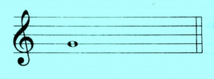
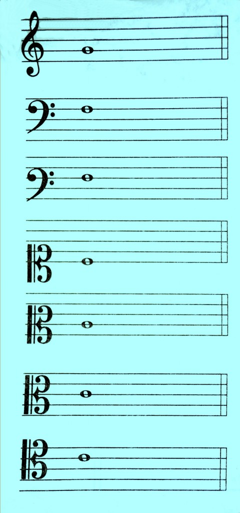

Нотные ключи:
Как говорилось ранее, нотные ключи используются для обозначения диапазона изменения высот звуков на нотном стане, поскольку с помощью одного ключа невозможно обозначить всю возможную совокупность звуков (для этого потребовалось бы большое количество дополнительных линеечек), а меняя ключ мы можем изменить точку отсчета высоты ноты на нотном стане или же инструмент.
Для гитары используется только ключ Соль (скрипичный ключ).

Ключ дает свое имя ноте, расположенной на нотном стане и определяющей последовательность остальных нот.

- Ключ Соль, или скрипичный ключ.
- Ключ Фа, или басовый ключ.
- Ключ Фа, или баритоновый ключ.
- Ключ До, или сопрановый (или дискантовый) ключ.
- Ключ До, или меццосопрановый ключ.
- Ключ До, или альтовый ключ.
- Ключ До, или теноровый ключ.